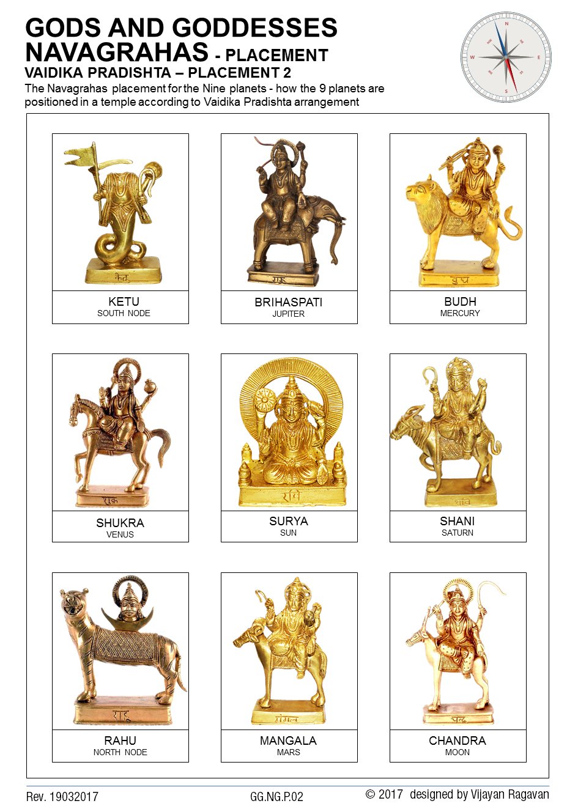

Navagraha
According to Hindu Mythology and Astrology, the positions of the nine planets in the twelve constellations of the zodiac and their movements are considered to be quite significant.
The Navagraha Stotram is written by Rishi Vyasa and is considered to be the peace mantra for the nine planets. They are powerful mantras which can pacify the Navagraha and protect the practitioner.
NavaGraha Stotram
Nama Suryaya Somaya Mangalaya Budhaya Cha,
Guru Shukra Sanibhyascha, Rahava Kethave Nama
The Navagraha Stotram is intended to help any person suffering from the negative effects of the position of any of the nine planets in one’s birth chart. By regular recitation of the mantras, you can please the planet lords and get favorable results from them.
Surya (Sun) Stotram
Japaa Kusumasankasham Kasyapeyam Maha Dhyuthim
Thamorim Sarvapaapghnam Pranatosmi Divakaram
I bow down to the sun who is red like the flower of Hibiscus, who is the son of Kasyapa, who is the enemy of darkness, who destroys all sins and who has a splendid radiance.
Chandra (Moon) Stotram
Dadhi Shankha tushaa-raabham Khseero Darnava Sambhavam
Namaami Shashinam Somam Shambhor Mukuta Bhooshanam
I offer my salutation to Lord Soma who is white in color like snow, yogurt and icebergs, who adorns the head of Lord Shiva and who rose from the Ksheasagar.
Mangal (Mars) Stotram
Dharanee garbha sambhootam, Vidyut Kaanti Sama-prabham
Kumaram Shakti Hastam cha, Tham Mangalaam Pranamamyamaham
I pray to Lord Mangal who shines like lightning, who is born of the Earth, who holds a weapon named Shakti in his hand and who is called Swami Kumara.
Budhan (Mercury) Stotram
Priyangukalika Shyaamam, RoopenaaPratimam Budham
Soumyam Soumya Guno Petham Tam Budham Pranamamyamham
I offer salutations to Budhan who has an incomparable beauty, who is very wise, the one who is the son of Soma and the one who possesses charming and noble characteristics.
Guru (Jupiter) Stotram
Deva-naam cha Rishi Naam cha Gurum kaanchana sannibham,
Buddhi Bhootam Trilokesham Tam Namaami Brihaspatim
I bow down to Lord Guru, the preceptor of all gods, rishis and saints, the one who is the form of ultimate wisdom, the one who is the God of all the three worlds and the one who is like gold.
Shukran (Venus) Stotram
HimaKundha Mrina-laabham Daitya-naam Paramam Gurum
Sarva Shastra Pravaktaaram Bhargavam Pranamaamyamham
I bow down to the son of Bhagu, the Shukra who is the spiritual master of asuras, the greatest teacher of all the learning, the one who shines like snow and jasmine.
Shani (Saturn) Stotram
Neelanjanasamaabhasam Ravi Putram Yamaagrajam
Chaaya Marthanda Sambhootam Tam Namaami Shanaiswaram
I offer prayers to Lord Shani whose complexion is dark blue, the one who is the elder brother of the God of Death (Yama), the one who is born of Chaya and the one who is the son of the Sun.
Rahu Stotram
Ardha Kaayam Mahaa Veeryam Chandra- Aditya Vimardanam
Simhika Garbha Sambhootam Tam Rahum Pranamaamyaham
I offer salutations to Rahu, the one with a half-body, the one who has exceptional strength, the one who is born of Simhika and the one who is the eclipse of the sun and the moon.
Ketu Stotram
Palaasha Pushpa Sankaasham Tarakaa Graha Mastakam
Roudram Roudraa-tmakam Ghoram Tam Ketum Pranamaamyaham
I pray to Ketu, whose appearance resembles that of flower Palaasha, who is the head of all stars and planets. Lord Ketu is violet and fierce.